_
SYSTEM FAILURE
EMERGENCY REBOOT IN PROGRESS
DO NOT POWER OFF
ISV CORRIGAN
//
CREW TERMINAL v2.4.1
|
SYS ONLINE
FINE
WOUNDS
0
/
3
HP
6
/
6
STRESS
0
/
6
JOURNAL
CARGO
MAP
ARCHIVES
▮
SHIP JOURNAL // CREW MEMOS
ALL ENTRIES
CREW MEMOS
CLUES
DAY LOGS
DOCUMENTS
DISTRESS
◀ BACK TO INDEX
▮
CARGO MANIFEST
ALL ITEMS
WEAPONS
TOOLS
MEDICAL
ARMOR
CONSUMABLES
KEY ITEMS
MISC
◀ BACK TO MANIFEST

DECK SCHEMATIC // ISV CORRIGAN
1.0x
ALERT
ACCESSIBLE
RESTRICTED
RESET VIEW
▮
SENSOR ARCHIVES
ALL FILES
IMAGES
VIDEO
◀ BACK TO ARCHIVES
⚠
CONFIRM SYSTEM RESET
All progress will be lost. Ammo, consumables, and inventory will revert to default state.
This action cannot be undone.
ABORT
WIPE & RESET
CREW MEMBER
DECEASED
TERMINAL LOCKED
WOUND LOG
No wounds recorded.
CLOSE